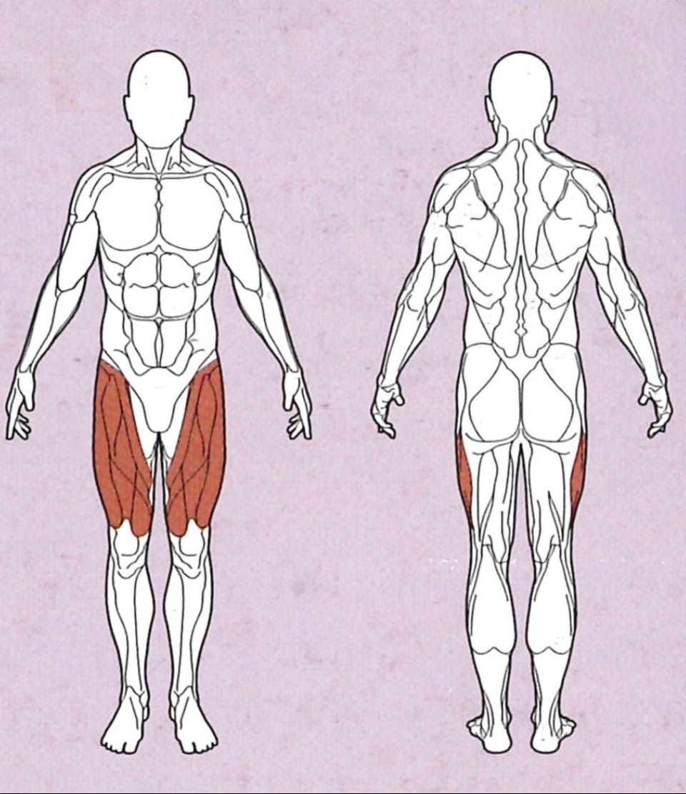

Beinpresse

Ausgangsposition
● Die Maschine so eingestellt, dass die Schulterpads auf deinen Schultern aufliegen, jedoch keinen Druck
ausüben
● Die Sitzposition einnehmen, dass die Beine stark angewinkelt sind, und die Füße parallel zueinander,
auf Schulterbreite auf der Druckplatte stehen
● Die Seitlichen Griffe festhalten
● Nutze jeweils die untere Platte wenn du in einer sitzenden Position arbeiten willst.
● Nutze jeweils die obere Platte, falls du in einer liegenden Position arbeiten willst.
Ausführung
Halte die seitlichen Griffe fest und drücke deinen Körper weg von der Platte, dies kannst du dir
vorstellen, als würdest du aufstehen, nur halt horizontal.
Wichtig hierbei ist, dass du deine Knie gerade hältst, sie dürfen also weder nach außen noch nach innen
ausweichen.
Strecke deine Beine nie vollständig durch, da dies zu schweren Verletzungen führen kann. Schaue daher
darauf,
dass deine Knie auch in der gestreckten Position nicht ganz durchgestreckt sind.
Rückführung
Winkle deine Beine nun langsam wieder an und kehre zur Ausgangsposition zurück.